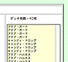
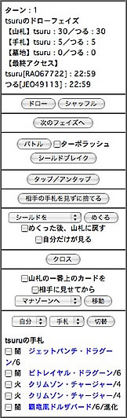

タカラから発売されているカードゲーム「デュエル・マスターズ」を、CGIを使って対人対戦可能にしたものです。このCGIにおいては、カードテキストの処理はコンピュータが自動的に行うわけではありません。カードのテキスト内容に基づき、操作パネルのボタンを使って手動で行ってください。
このCGIは、IDとパスワードを登録しないと遊べません。IDはランダムで割り振られますが、パスワードはプレイヤーが自由に設定することができます（ただし半角英数のみ）
IDは対戦中や入室画面で表示されます。あまりにプレイ中の態度が悪いと、管理者はそのIDのプレイヤーを対戦禁止にすることができます。
IDとパスワードの両方が一致しないと、デッキを組み替えたり対戦に参加したりすることができません。IDおよびパスワードは絶対に忘れないようにしてください。
誰かが同じIDとパスワードの組み合わせでアクセスすると、誰でもあなたのデッキをいじることができ、対戦中に割り込むことも可能になってしまいます。IDは常に表示されますが、パスワードは絶対に他人にわからないようにしてください。
ID登録画面ではコメントも登録することができます。コメントは入室画面で対戦中の人や待機中の人の名前をクリックすると、プロフィール画面で表示されます。
左側がカード一覧です。カード名の右にあるテキストボックスにデッキに入れる枚数を記入して「デッキ組替」ボタンを押すと、記入した枚数、カードが加えられます（ただし、４枚を超えてカードを加えることはできません）
カード一覧内のセレクトメニューでは、「並び替え」ボタンを押すと、その並び順でカードの表示順を変更します。ただし、「名前順」は文字コードでのソートなので、必ずしも読みどおりには並びません。
右側が現在のデッキ内容の一覧です。チェックボックスにチェックして「デッキ組替」ボタンを押すと、チェックしたカードがデッキから消去されます。
デッキ一覧にある「全チェック」のチェックボックスをチェックすると、デッキ一覧のカードすべてがチェックされた状態になります。また、「全チェック」のチェックを外すと、すべてのカードのチェックが外れます。
カードの能力がわからない場合、カードの名前をクリックすると、その詳細が表示されます。
上段左上のセレクトメニューは、拡張パックのシリーズを選択します。選んで「検索」を押すと、そのシリーズのカードが表示されます。このメニューで「全部」を選ぶと、すべてのシリーズのカードが表示されます（重いので注意！）
左から二番目のセレクトメニューは、表示されるカードの種類（文明および呪文・クリーチャー）を選択します。選んで「検索」を押すと、その種類のカードだけを表示できます。
左から三番目のセレクトメニューでは、カードの持つ能力によって表示されるカードを検索することができます。
シリーズとカードの種類、および能力を組み合わせて検索することもできます。たとえば、第２弾の水文明のブロッカーを持つクリーチャーだけを表示することが可能です。
二段目のテキストボックスでは、カード名および種族名の検索が行えます。それぞれの入力欄に文字列を入力して「検索」を押すと、その文字列を含むカードだけを検索して表示します。
たとえば「カード名で検索」に「クリスタル」と入れて検索すると、「クリスタル・パラディン」「クリスタル・ランサー」「クリスタル・メモリー」の３枚のカードが表示されます。
このテキストボックスでは、スペース区切りによる複数ワード検索も可能です。例えば「種族名で検索」に「アーマード・ドラゴン アース・ドラゴン」と入れて検索すると、種族がアーマード・ドラゴンかアース・ドラゴンのカードがすべて表示されます。
デッキは５個（もしくは管理人が設定した個数）まで登録することができます。テーブル右上のセレクトメニューでは、編集するデッキを選択することができます。まだ記録されていない場合は「記録なし」と表示されます。
デッキを切り替える場合はセレクトメニューでデッキ名を選択し、「デッキ選択」ボタンを押します。
管理人がデッキコピー機能をONにしている場合、あらかじめ用意されたデッキレシピからデッキ内容をコピーすることができます。
セレクトメニューでコピーしたいデッキ名を選択し、「コピー」ボタンを押すと、その内容が自動的にデッキ一覧に加えられます。この時、それまでデッキに入っていたカードはすべて消えてしまいますので注意してください。
40枚のデッキが完成したら、必ず「デッキセーブ」のボタンを押してデッキを登録してください。デッキを組み替えてもセーブしない限りは対戦で使用することはできません。この時、作ったデッキに名前をつけることができます。デッキ名は入室画面でデッキを選ぶ際やプロフィール画面などで表示されます。39枚以下や41枚以上のデッキを登録することもできますが、そのデッキで対戦を行うことはできません。
 「テキスト表示」をクリックすると、デッキ内容はテキストエリア内に表示されます。このテキストを直接編集して「デッキ組替」ボタンを押すと、デッキを変えることができます。また、コピー＆ペーストしてどこかに保存しておけば、何種類かのデッキを作って切り替えたり、他のデュエル場へ移すことが可能です。カード名はこのCGIで登録されている正式名称でないと受け付けませんので注意してください。（例：×スパイラルゲート→○スパイラル・ゲート）
入室画面に入ると、画面上部に現在の自分の情報、その下に対戦する部屋の一覧が表示されます。空の部屋には「現在使われていません」、対戦相手を待っている状態の部屋には待っている人の名前が表示されます。また、対戦中の部屋の場合は「使用中 対戦者１VS対戦者２」のように表示されます。
対戦者や待っている人の名前をクリックすると、プロフィール画面が表示されます。その人が使っているデッキの名前や戦績、そしてコメントが登録されている場合はそのコメントが表示されます。対戦相手を選ぶ時の参考にしてください。
「様子を見る」をクリックすると、現在行われているデュエルの様子を見ることができます。また、対戦中に途中でブラウザが終了してしまったりした場合、５分以内に自分の対戦していた部屋の「様子を見る」をクリックすれば、デュエルに復帰できます。
自分の使いたいデッキをセレクトメニューで選択し、「入室する」ボタンを押せば、その対戦部屋に入室できます。ただし、一人のプレイヤーが複数の対戦部屋でデュエルを行うことはできません。
入室画面で「ルール」のセレクトメニューを「殿堂あり」にすると、殿堂入りカードはデッキにそれぞれ１枚のみに制限するルールでの対戦が可能になります。また、「AG環境」にすると、「アフタージェネレート」レギュレーション（転生編・コロコロドリームパック・ベストチャレンジャーパック収録カードのみ）での対戦となります。ただし、既に誰かが待っている部屋では、先に入った方が決めた殿堂ルールのありなしに従ってください。部屋にはそれぞれ、その部屋の殿堂ルールがどうなっているかが表示されています。
入室画面には一言掲示板が用意されている場合があります。途中で事情があってデュエルを中断してしまった場合や待ち合わせなどにご利用ください。発言する場合、名前およびパスワードはプレイヤーファイルに登録されているものが自動的に記入されます。また、発言をした本人か管理者は、右下のテキストボックスに消したい発言の番号とパスワードを入力することによってその発言を消すことができます。
画面左のフレームに操作パネル、右側のフレームにフィールドの状態が表示されます。
フィールドは上が相手の場、下が自分の場。カードの背景が灰色なのは、タップされているカードを表します。
各種動作を行った場合のメッセージや発言フォームに入力した発言は、ポップアップウィンドウ内に表示されます。ブラウザの設定などでポップアップウィンドウを表示しない設定にしている人は、その設定をあらかじめオフにしておいてください。間違ってポップアップウィンドウを閉じてしまっても、リロードすればまた表示されます。
画面がリロードされる間隔やポップアップウィンドウ内に表示されるメッセージの行数は、右上の発言フォームがあるフレームで調整できます。『インビンシブル・テクノロジー』で山札から大量にカードを手札に加える場合など時間のかかる操作を行なう場合は、あらかじめリロード時間を長めに設定することをお勧めします。

操作パネル上部には現在のターン数、フェイズ、各プレイヤーの名前およびIDと手札・山札・墓地の枚数、最後にアクセスした時間が表示されます。
パネル下部には各種操作ボタンが表示されます。以下に各ボタンの機能を説明していきます。
『山札を１枚ずつ』『めくる』終了後、もしくは『枚数を指定して』『めくる』場合、『手札に加える』『墓場に送る』ボタンがフィールド上に表示されますので、移動するカードをチェックして移動する場所を選んでください。めくったカードをバトルゾーンに出す場合は、いったん手札に加えてからバトルゾーンに出してください。
『枚数を指定して』『めくる』、もしくは『山札を１枚ずつ』『めくる』ボタンを押す前に『めくった後、山札に戻す』のチェックボックスにチェックしておくと、『フェアリー・キャンドル』や『進化設計図』の効果などでめくったカードを並び替えて山札に戻す機能が使えるようになります。
『枚数を指定して』『めくる』ボタンを押す前に『自分だけが見る』のチェックボックスにチェックしておくと、メッセージウィンドウに表示されるカード名が自分にしか見えなくなります。『パルピィ・ゴービー』の効果などで相手にめくったカード名を知られたくない場合に利用してください。
このボタンは、相手のターンにも使うことができます。また、ドローフェイズおよびマナチャージフェイズには、このボタンは使えません。
DMカードにおいては、自分のターンは『ドローフェイズ』『マナチャージフェイズ』『メインフェイズ』『バトルフェイズ』の４つのフェイズによって構成されています（場合によっては『アンタップフェイズ』が追加されます） 詳しくは公式サイトのルール説明ページを参照していただきたいのですが、以下に各フェイズの簡単な流れを説明します。
『バトル』および、それに伴う『アタックトリガー』『ブロッカー選択』『シールドトリガー』に関する行動を行います。
『バトル』ボタンを押すと、攻撃するクリーチャーを決定するようフィールドに表示されますので、攻撃するクリーチャーのラジオボタンをチェックして、『決定』ボタンを押します。
この時、もともと持っている能力以外で『ブロックされない』または『Ｗ・ブレイカー』『Ｔ・ブレイカー』『クルー・ブレイカー』の能力をクリーチャーが得ていた場合、『ブロックされない』場合はチェックボックスにチェックをし、各ブレイカーの場合はセレクトメニューで選択してから『決定』ボタンを押して下さい。もともとその能力をクリーチャーが持っていた場合は、最初からチェックされた状態で表示されますが、能力のチェックを外してしまったり選択メニューを変えてしまうと、能力を使うことができないので注意してください。
また、バトルボタンの横にある『ターボラッシュ』のチェックボックスにチェックをしてからボタンを押すと、ターボラッシュの能力でアタックトリガーを得るクリーチャーの場合、アタックトリガーを使うことができます。このチェックをしていない場合、ターボラッシュでのアタックトリガーは発動しませんので、注意してください。
次に、攻撃する対象を選択します。『プレイヤー』『クリーチャー』の選択肢がフィールド上に表示されますので、攻撃したい方を選んでください。『クリーチャー』を選んだ場合は、更にどのクリーチャーを攻撃するか決定するようフィールドに表示されますので、対象のクリーチャーを選択してください。
攻撃したクリーチャーがメテオバーンを持っており、なおかつそのクリーチャーの下にカードが存在する場合、『メテオバーンを使いますか？』と訊かれます。『はい』を押すと『墓地に置くカードを選んでください』と訊かれますので、ラジオボタンで選択して『決定』ボタンを押します。
また、攻撃したクリーチャーがアタックトリガーを持っていた場合、一時的にバトルの処理を中断してアタックトリガーの効果を行います。その場合、フィールドに『アタックトリガーの処理を終了しますか？ はい／いいえ』のボタンが表示されますので、『はい』を押すと、バトルの処理を続行します。
『ブロックされない』能力を持たないクリーチャー以外が攻撃し、相手フィールドにブロックできる状態のブロッカーがいた場合、一時的に操作の優先権が相手プレイヤーに移動します。ブロッカーの選択フィールドが画面上に表示されますので、ブロックするクリーチャーを選択して『する』を押すと、ブロックを実行します。また、『しない』ボタンを押すと、ブロックをキャンセルすることができます。
もともと持っている能力以外で『ブロッカー』の能力を得た場合、カード内に表示されている『ブロッカー』のチェックボックスをチェックすることによって、ブロッカーの能力を得ることができます。能力が無くなった場合は、チェックを外すことによってブロッカーの能力をOFFにすることができます。もともとブロッカーを持っているクリーチャーは最初からチェックされた状態で表示されますが、チェックを外してしまうと、ブロッカーの能力が失われてしまうので注意してください。
ブロックされなかった場合、対象で『プレイヤー』を選んでいた場合は破壊するシールドを選択します。『クリーチャー』を選んでいた場合は自動的にバトル処理となります。
『神拳の超人』など、ブロックされた場合またはブロックされなかった場合に発動する能力を持っているクリーチャーの攻撃がブロックされた（されなかった）場合、一時的にバトルの処理を中断して、それらの効果を行います。フィールドに『処理を終了しますか？ はい／いいえ』のボタンが表示されますので、『はい』を押すと、バトルの処理を続行します。
攻撃によってシールドが破壊されると、ＳトリガーやＳバックの有無にかかわらず、操作の優先権が相手プレイヤーに移動します。Ｓトリガー等が無かった場合は、『バトルを続行しますか？』というボタンが表示されますので、確認後『はい』を押してください。『はい』を押さないと、いつまで経っても操作の優先権が攻撃側に戻りませんので注意してください。
Ｓトリガー（ストライクバック）があった場合、使うカードを選択して『使う』ボタンを押すと、自動的にそのカードがバトル場に出されますので、呪文もしくはクリーチャーがバトルゾーンに出た時に発生する効果の処理を行ってください。その際、『シールド・トリガー（ストライク・バック）の処理を終了しますか？』という選択フィールドが表示されますので、処理を終了するときには必ず『終了する』のボタンを押してください。この時、場に出された呪文は墓地へと移動しません。『終了する』のボタンを押す前に必ず呪文を墓地へと移動してください。移動するのを忘れてしまった場合は、相手に移動してもらうか、次の自分のターンになった時に移動するようにしてください。
どうしても相手に勝てそうにない場合、発言フォームにある『投了』ボタンを押すと、自分の負けを宣言して、デュエルを途中で終了することができます。投了した場合、自分の負けとして戦績がプレイヤーデータに記録されます。
どちらかが相手に直接攻撃を当てるか、どちらかの山札が０になるか、投了するとゲーム終了となり、戦績がプレイヤーデータに記録されます。